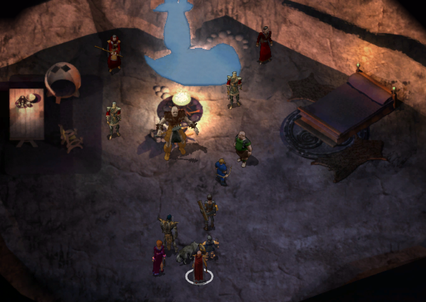

Under Construction
Enklawa Adoy'a 60

Podążając traktem drużyne w osłupienie wprawiła kracząca wiwiórka (1). Neera uznała, że byli już blisko odnalezienia poszukiwanego dzikiego maga. O ile stworzenie nie miało wrony za ojca, musiało zostać przemienione całkiem niedawno. Leech zastanawiał się, dlaczego ktoś miałby zamieniać wronę w wiewiórkę. Być może czarodziej nadal nie potrafił panować nad własną magią. Neera podsunęła prostsze wyjaśnienie: wiewiórka mogła zamęczać go pytaniami o jego magiczne talenty.
Neera zastanawiała się, czy odwaga i szaleństwo nie były dwiema stronami tej samej monety. Podejrzewała, że wielu ludzi uważało Leecha za szaleńca, gdy rzucał się na potężniejszych przeciwników. Leech zauważył, że gdy postępował za nią, nazywała to odwagą, lecz kiedy sama robiła coś podobnego, należało uznać to za szaleństwo. Neera roześmiała się i przyznała, że zapewne wiele osób zgodziłoby się z takim rozumowaniem. Zapytana o Czerwonych Czarodziejów, stanowczo zaprzeczyła, by zrobiła cokolwiek, czym mogłaby zasłużyć na ich gniew. Chcieli ją pojmać, rozciąć i sprawdzić, co czyniło ją dziką maginią. Próbowali kontrolować wszystko, co rozumieli, a niszczyć to, czego pojąć nie potrafili. Leech nazwał ich potworami i zapewnił Neerę, że dopóki podróżowała z nim, nie zdołają jej skrzywdzić. Dzika magini przyjęła te słowa z wdzięcznością, choć wizja bezradnej niewiasty ratowanej przez bohatera wyraźnie jej nie odpowiadała. Cieszyła się ze wspólnej podróży, lecz nie zamierzała występować w roli damy w opałach. Na tym zakończyła rozmowę. Przyznała, że miło było porozmawiać, i zaproponowała, by kiedyś do tego wrócili. Najlepiej jednak innym razem.
Na drodze natykamy się na gobliński posterunek (2). Udaje się nam dowiedzieć, że niejaki Rogdok pilnuje Bargrivyek’a. Nie mam pojęcia o co chodzi, ale podążamy dalej.
Przed leśniczówką (3) Magreb ostrzegł drużynę, że napastnicy nadchodzili spomiędzy drzew. W każdym cieniu dostrzegał gobliny, które wcześniej pojawiły się znikąd i opanowały całą okolicę. Leech uspokoił go i poprosił, by opowiedział, co się wydarzyło. Magreb wyjaśnił, że wraz z Rilsą od wielu lat strzegli tych ziem i nigdy wcześniej nie mieli problemów z goblinami. Niedawno jednak pojawiło się ich mnóstwo. Zabiły Rilsę, gdy próbowała z nimi porozmawiać, a Magreb nie potrafił samotnie stawić im czoła. Początkowo gobliny krążyły wokół domu starego maga, później jednak przeniosły się do jaskiń na północnym wschodzie, zabierając czarodzieja ze sobą. Wkrótce przybył wielki hobgoblin, który ogłosił się królem plemienia. Mag nazywał się Adoy. Trzymał się z dala od mieszkańców okolicy, twierdząc, że nie chciał nikogo skrzywdzić swoją magią. Magreb uważał go za przyjaznego, choć nieco osobliwego człowieka. Na dźwięk tego imienia Neera natychmiast ożywiła się. To właśnie Adoya szukali. Magreb nie wiedział jednak, czy mag nadal żył. Od chwili, gdy gobliny zabrały go do swojej jaskini, nie widział go ani razu i przypuszczał, że podzielił los Rilsy. Zapytany o przywódcę goblinów, Magreb wyjawił, że nazywali go Rogdokiem. Hobgoblin mianował się arcykapłanem jednego z ich bogów. Coraz liczniejsze patrole wyruszały z jaskiń na poszukiwanie bóstwa, które rzekomo zaginęło. Leech obiecał rozprawić się z goblinami. Magreb wskazał jaskinie na północnym wschodzie, lecz ostrzegł, że napastnicy wystawili tak wiele patroli, iż sam nie odważył się zbliżyć wystarczająco, by odzyskać ciało Rilsy. Nie pragnęła walki, a mimo to gobliny odebrały jej życie. Leech zapewnił, że sprawiedliwości stanie się zadość. (Magreb and Rilsa 109)
Czary Adoy'a najwyraźniej są nieco dziwne. Napotykamy gadającego łosia z wiewiórką (4). Łoś uznał, że wyczaruje królika ale pojawił się ogr. Wygląda, że te zwięrzęta to zaklęci dzici magowie, którzy mi swojej kondycji dalej robią idiotyzmy.
Szlak pilnowany przez gobliny urywa się nagle przed jaskinią (5).

W niej odnajdujemy ciało Rilsy (A) i grzebiemy ją pod sterta kamieni oraz zabieramy jej pierścień.
Znajdujemy i Rogdoka (B), ktory strzeże pieczarę.
A tam odnajdujemy Adoy'a (C). Mag podziękował Mystrze za przybycie ratunku, choć żałował, że wędrowcy musieli torować sobie drogę mieczami. Neera wyjaśniła, że sama była dziką maginią i liczyła, iż Adoy nauczy ją panować nad nieprzewidywalną mocą. Starzec szybko ostudził jej nadzieje. Przyznał, że nie był najlepszym przykładem kogoś, kto opanował dziką magię, i wątpił, czy ktokolwiek naprawdę potrafił tego dokonać. Gdyby jednak zdołał ograniczyć otaczający ich chaos, chętnie spróbowałby jej pomóc. Źródłem kłopotów okazał się Rogdok, który przybył, by ustalić, skąd w okolicy wzięły się nowe gobliny. Nie wierzył, że Adoy był bogiem, lecz obawiał się, że jego pobratymcy mogą za takiego uznać starego maga, dlatego nie odważył się go zaatakować. Zamiast tego uwięził Adoya. Dopóki czarodziej pozostawał pod jego kontrolą, hobgoblin mógł panować nad goblinami. Nagle pojawił się Ekandor, zadowolony, że wreszcie odnalazł poszukiwanego maga. Neerę nazwał elfką, czym natychmiast ją zirytował. Poprawiła go stanowczo, przypominając, że była półelfką. Ekandor zapowiedział, że po schwytaniu obojga podda ich badaniom, a jeśli kolejny dziki mag okaże się bezwartościowy, być może wykorzysta go do innych prób. Adoy odmówił potulnego uczestnictwa w eksperymentach, zwłaszcza prowadzonych przez Czerwonych Czarodziejów. Neera dodała, że nawet nie ukończyła szkoły, więc tym bardziej nie zamierzała poddawać się żadnym testom.


Po walce Adoy odetchnął z ulgą, choć przyznał, że jego zaklęcie wywołało dość niefortunne zamieszanie. Leech zauważył, że zamieszanie bardzo dogodnie trzymało starego maga z dala od walki z Czerwonymi Czarodziejami. Adoy odparł, że znacznie chętniej stanąłby u boku drużyny, lecz jako praktyk dzikiej magii nie zawsze potrafił przewidzieć skutki własnych czarów.
Wyjaśnił, że Czerwoni Czarodzieje ścigali zarówno Neerę, jak i jego, by badać ich zdolności, a być może również ich mózgi. Chcieli odkryć, dlaczego dzicy magowie potrafili władać mocą tajemnego chaosu, która pozostawała poza ich zasięgiem. Neera poprosiła, by przynajmniej nie rozmawiali o badaniu mózgów.
Adoy próbował wrócić do tematu przerwanej rozmowy, lecz Leech przypomniał mu, że drużyna po raz drugi uratowała mu życie i zasługiwała choćby na odrobinę wdzięczności. Stary mag przyznał, że Rogdok nie słuchał żadnych argumentów, a on sam niechętnie uwolnił pełną moc dzikiej magii przeciw plemieniu, które uznawało go za boga. Nie każdego dnia ktoś miał przecież okazję odbierać boską cześć.
Neera ponagliła go, by podzielił się wreszcie mądrością zdobytą przez długie lata. Adoy wyjaśnił, że jedyną tajemnicą było przyjmowanie złego wraz z dobrym. Dziki mag nie powinien rozpaczać, gdy jego kula ognia spopieliła całe plemię trolli. Musiał natomiast nauczyć się improwizować, gdy zamiast płomieni z nieba spadały płatki kwiatów. Połowa uroku tej profesji polegała na tym, że nigdy nie było wiadomo, co wydarzy się za chwilę. Adoy przyznał, że nawet po tylu latach nie odkrył jeszcze przyjemności płynącej z przemiany w kobietę, gdy zaklęcie zawiodło podczas poprzedniego lata. Neera nie chciała uwierzyć, że cała jego wiedza sprowadzała się do tak banalnej rady. Podejrzewała, że stary mag musiał skrywać jeszcze jakiś sekret.
Adoy uznał, że być może miał dla niej coś przydatnego. Zdjął pas służący mu podczas sporadycznych wypraw do miasta i przekazał go Neerze. Ostrzegł jedynie, że noszącego go mogła czasem porazić magia, lecz mimo to pas powinien okazać się pomocny. Sam rzadko odwiedzał osady, dlatego Neera prawdopodobnie miała zrobić z niego lepszy użytek, a przy okazji zyskać nieco spokoju ducha. Leech zapytał, czy był to najlepszy dar, na jaki mag mógł się zdobyć. Adoy zapewnił, że o nim również nie zapomniał, po czym przywołał dla niego wspaniały skarbiec pełen kosztowności. W tej samej chwili zniknął, pozostawiając drużynę bez skarbu i bez możliwości zgłoszenia reklamacji.
Neera oburzyła się, że sama pokonała tyle przeszkód, a stary mag po prostu zniknął. Leech przypomniał jej, że bez pomocy drużyny cała wyprawa mogła zakończyć się znacznie gorzej. Dzika magini przyznała z wyraźną niechęcią, że rzeczywiście otrzymała pomoc, lecz zauważyła też, że dla Leecha każda historia najwyraźniej musiała ostatecznie sprowadzać się do niego. Cóż taka karma (Neera).
Wychodzimy z jaskini i wracamy do Magreba (3), oddajemy mu pierścień Rilsy i potwierdzamy, że została pogrzebana (Magreb and Rilsa 109).
Powinniśmy zajrzeć ponownie do Doliny Grobów. Ich bliskość i topografia teremu sugerują, że może tam znajdziemy oręż Ishoshiego.
Bestiariusz: goblin, wilk, sztraszliwy wilk, ogr, berserker ogr, strażnik czerwonych magów, czarodziej czerwonych magów
Dolina Groboców 61

Nie musieliśmy długo szukać w jednej z kotlin (8) spotykamy jęczącego trolla a przy nim ostrze złamanej katany. Wszystko wskazywało na to, że był to fragment Saiai no Hito, słynnego miecza z Kozakury, wykutego w Yimind przez Ne Kurosunę oraz mnicha Shiroume Yakuchiego.
Ostrze wciąż mogło zostać naprawione, potrzeba było jednak odnaleźć należącą do niego rękojeść (Restoring Saiai no Hito).
Czas nam wypocząć w łożku i zaznać trchę luksusu. Podążamy w stronę Nashkel ale po drodze zahaczymuy o Samotne Szczyzty.

Bestiariusz: jęczący troll
Na szlaku
Na szlaku spotykamy mordercę a przy nim fragment raportu opisującego dotychczasowe ustalenia w sprawie Skręconej Runy. Organizacja była ściśle tajnym stowarzyszeniem liszów oraz innych potężnych nieumarłych czarowników. Tożsamość członków jej wewnętrznego kręgu pozostawała nieznana nawet większości magów wykonujących rozkazy Runy, często nieświadomych, komu naprawdę służyli. Od Roku Smoczej Furii Spaczona Runa stała się najpotężniejszą organizacją na południowym zachodzie Faerûnu. Jej agenci działali we wszystkich krajach położonych na południe od Wysokiego Wrzosowiska i na zachód od Gór Rogu Burzy.
Stowarzyszenie potajemnie kontrolowało niemal połowę wpływowych rodów Calimshanu. Nie kierowało nimi jednak bezpośrednio. Nieśmiertelni władcy Runy woleli cierpliwie czekać, aż czas sam przybliży ich do wyznaczonych celów. Raport miał wyliczać siedmiu znanych Mistrzów Runy, lecz dalszą część strony starannie wyrwano. Ktokolwiek sporządził dokument, zadbał o to, by najważniejsza tajemnica pozostała bezpieczna.
Jakie zamiary względem nas ma to stowarzyszenie i ich adwersarze? Kim był napotkany assasyn? Co oznacza tatutaż na jego przedramieniu?

Póki co te pytania pozostają bez odpowiedzi (The Twisted Rune 114)
Samotne Szczyty 62

Spotkana Sarhedra, krasnoludzka wojowniczka (1) ostrzegła nas przed ogrami i ich obozem położonym na południe. Między słowami zrozumieliśmy, że chce abyśmy sie z nimi rozprawili. I rzeczywiście kilka ogrów i ogrillion (2) przestały włoczyc się po okolicy a zleceniodawczyni podziekowała nam (Ogre Hunting 112).
Przy opuszczonym domu (3) ratujemy krowę Hulrika zaatakowana przez grupę xvartów. Okazuje się, że trzoda jestw okolicy często trzebiona przez róźne stwory (Xvart Raids 113). Zastanawiające jest nadawanie krów imion - ta miała na imię Arabella!
Następnie likwidujemy kolejną grupę bandytów (4) - Ioin Gallchobhair, Billy and Dribben. Chyba nie rozumieją, że muszą nas brać na poważnie.
Sprat (5) nie miał czasu na rozmowę. Pędził do Amn, by przekazać wieści o coraz częstszych napadach bandytów, wyczerpujących się zapasach żelaza oraz mieszkańcach zbrojących się z powodu braku broni. Nic dziwnego, że stosunki między sąsiadami stawały się coraz bardziej napięte. Powtarzając, że musi dotrzeć do Amn, ruszył w dalszą drogę.
Bardzo szczęśliwie spostrzegamywodny opal pod kamieniem (6). To kolejny rzadki kamień wykorzystywany do urządzeń lokacyjncych, chyba możemy wrócić do Wysokiego Żywopłotu (Destroy the Cursed Bracers 56).

Arghain zagrodził drużynie drogę (7) i zażądał żelaza albo życia. Po chwili poprawił się, uznając, że najlepiej będzie odebrać przybyszom jedno i drugie. Wyjaśnił, że broń jego klanu kruszyła się niczym elfie kości, wystawiając pobratymców na pośmiewisko. Zamierzał więc szybko rozprawić się z wędrowcami i zabrać całe ich żelazo, najlepiej bez niepotrzebnego bólu. Na koniec wrzasnął, że był wściekły, i ruszył do ostatniego ataku.
W jaskini obok (8) nic ciekawego.
Bestiariusz: ogr, ogrillion, elita hobgoblinów, niedźwiedź jaskiniowy, wilk polarny, straszliwy wilk, xvart, pół ork, kobold, etterkap